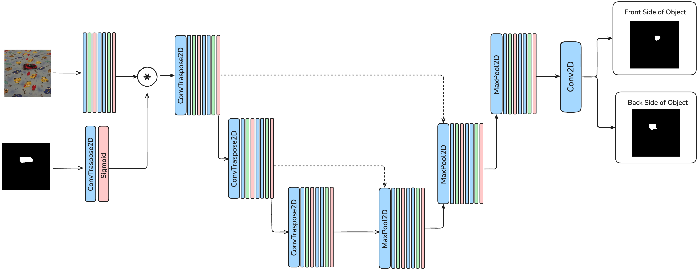

1National University of Science and Technology POLITEHNICA Bucharest, Romania 2Institute of Mathematics "Simion Stoilow" of the Romanian Academy, Romania 3NORCE Norwegian Research Center, Norway
Demo comparing the teacher and the student methods showcasing examples where the teacher is faster, where the student is faster and when the teacher fails to do the task.
Motivation and Contribution
Challenge: Classical IBVS methods suffer from numerical instabilities and singularities, while marker-based approaches (ArUco, AprilTags) limit deployment in dynamic indoor environments. GPS-denied scenarios demand efficient, marker-free visual servoing for quadrotor control.
Our Solution: We present a self-supervised neuro-analytical framework featuring a Numerically Stable Efficient and Reduced (NSER) Image-Based Visual Servoing (IBVS) teacher model, distilled into a lightweight 1.7M parameter student network achieving 11x real-time performance with improved control accuracy.
Efficient knowledge distillation: Dual-path system transferring geometric visual servoing from teacher to compact student neural network that outperforms the teacher while suitable for onboard deployment.
Practical sim-to-real transfer: Digital-twin training with real-world fine-tuning, validated in GPS-denied indoor environments with minimal hardware.
Visual Performance for Teacher
Front-Left Approach
Up-Left Approach
Up-Right Approach
Left Approach
Right Approach
Down-Left Approach
Down-Right Approach
Front-Center Approach (Teacher Fails)
Visual Performance for Student
Front-Left Approach
Up-Left Approach
Up-Right Approach
Left Approach
Right Approach
Down-Left Approach
Down-Right Approach
Front-Center Approach (Student Succeeds)
Our Approach
We propose a self-supervised neuro-analytical framework combining a numerically stable analytical visual servoing controller with efficient neural network distillation for real-time quadrotor control.
Lightweight 1.7M parameter student network trained via knowledge distillation from teacher. Simulator-based data generation with sim-to-real transfer achieves 11× faster inference (1.85ms vs 20.69ms).
2. Numerically Stable IBVS Teacher (NSER)
Analytically stable Image-Based Visual Servoing controller addressing classical IBVS numerical instabilities through reduced formulations and robust error computation from corner points.
3. Two-Stage Target Segmentation

YOLOv11 detection refined with U-Net segmentation splitter to distinguish anterior-posterior vehicle halves for precise orientation estimation.
This integrated approach combines the robustness of analytical control theory with the efficiency and adaptability of neural networks, enabling practical deployment on resource-constrained aerial platforms.
Table: Teacher-student comparison across different starting positions. The left side shows results in the simulator; the right side shows results on flights in the real world. Metrics include total flight distance/time, final norm error in pixels (L2 norm of the error vector for all 4 corner points combined), and final IoU (L2 norm and IOU are computed in the last 3 secs of the flight). The teacher is slightly faster in flight time. Student is 11 faster in computation time (see Tab. 3). The student is slightly more accurate (lower errors at destination than the teacher) in simulation, where it was trained more, but it is slightly less accurate in real-world, where it was trained on far fewer flights.
Inference Time Analysis
Evaluator
Avg
Std
Med
Min
Max
FPS
NSER IBVS
20.69
7.63
24.56
6.45
82.55
48.30
Student
1.85
0.93
1.84
1.79
235.64
540.8
Table 3. Computation times (in milliseconds) over 30 trials. The small 1.7M params student ConvNet is 11× faster than the teacher.
Contact
For questions and collaboration inquiries, please contact the authors through the GitHub repository or academic channels.
Citation
@article{mocanu2025efficient,
title = {Efficient Self-Supervised Neuro-Analytic Visual Servoing for Real-time Quadrotor Control},
author = {Sebastian Mocanu, Sebastian-Ion Nae, Mihai-Eugen Barbu, and Marius Leordeanu},
journal = {International Conference on Computer Vision Workshops 2025 (ICCVW 2025)},
year = {2025}
}